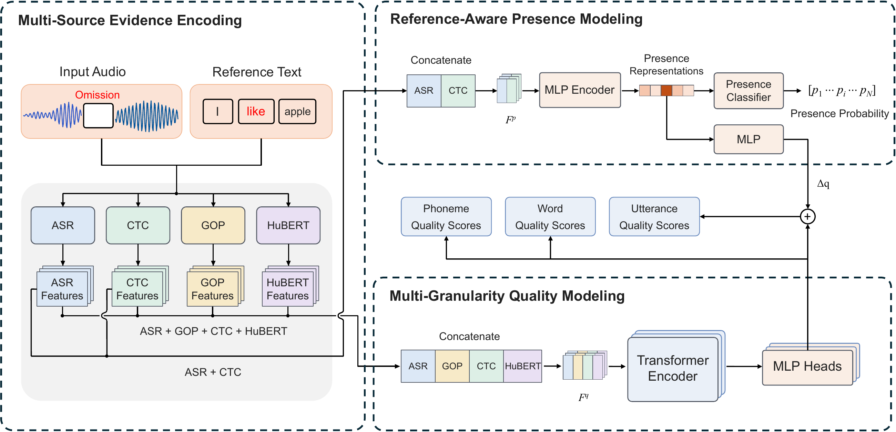

PreQ: Presence before Quality for Omission-Aware Pronunciation Assessment
Henan Telida Network Technology Co., Ltd., Zhengzhou, China
* Equal contribution. † Corresponding author: wangzhiwei@telidatech.cn
Abstract
Automatic pronunciation assessment aims to provide accurate and interpretable feedback on learners’ speech. However, existing pronunciation assessment methods often conflate word presence with pronunciation quality, leading to misleading feedback for omitted words. We propose PreQ, a presence-before-quality framework that explicitly decouples word presence from pronunciation quality. PreQ first estimates word presence from multi-source acoustic and phonetic evidence and then incorporates presence information into pronunciation assessment. Experiments on SpeechOcean762 and MPS show that PreQ achieves strong word omission detection and competitive multi-granularity pronunciation assessment performance. PreQ has been deployed online at www.waxueshe.com.
Framework

Waxueshe · 哇学社
Waxueshe is a gamified English-learning platform that combines vocabulary, grammar, and speaking practice through activities such as word-order puzzles, fill-in-the-blank exercises, reading aloud, and dictation.
PreQ powers all word- and sentence-level pronunciation scoring on Waxueshe. During speaking practice, it identifies whether each expected word is spoken and evaluates pronunciation quality separately. By distinguishing omissions from mispronunciations, PreQ delivers more accurate and informative sentence-level pronunciation scores.
Explore Waxueshe